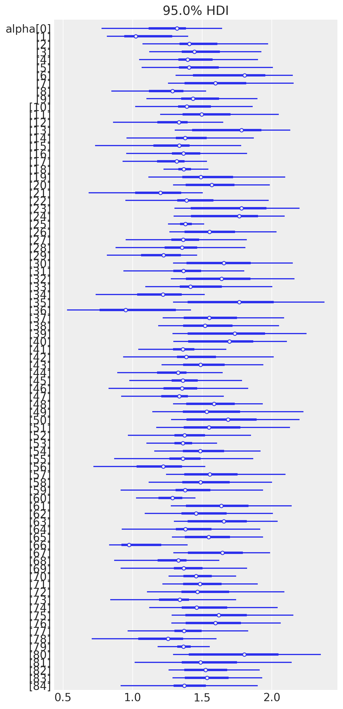
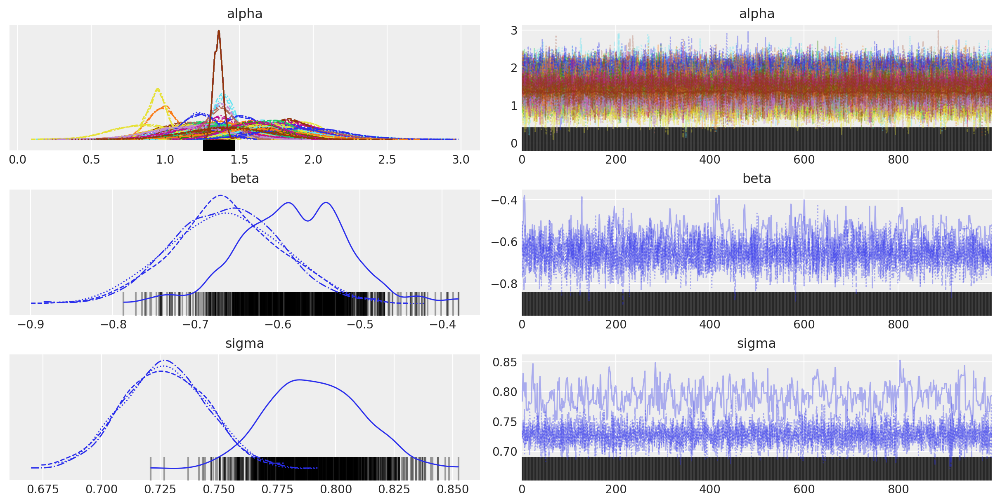

Regressione multilivello con Stan#
I dati e i modelli per questo notebook sono presi dal capitolo 12 del libro “Data Analysis Using Regression and Multilevel/Hierarchical Models” di Andrew Gelman e Jennifer Hill, Cambridge Press, 2007. In questo capitolo viene utilizzato un modello di regressione multinivel per analizzare i dati provenienti da un sondaggio nazionale sui livelli di radon nelle case negli Stati Uniti effettuato dall’EPA nei primi anni ‘90.
L’obiettivo dello studio sul radon è fornire stime ragionevoli dei livelli di radon nelle case in ciascuna delle circa 3000 contee negli Stati Uniti. Il gas radon è un prodotto del lento decadimento dell’uranio in piombo. A causa delle differenze geologiche locali, il livello di esposizione al gas radon varia da luogo a luogo. Una fonte comune è rappresentata dai minerali contenenti uranio nel terreno e quindi si accumula in aree sotterranee come le cantine.
import os
import numpy as np
import pandas as pd
from cmdstanpy import CmdStanModel
import arviz as az
# plotting libs
import matplotlib.pyplot as plt
# suppress plotnine warnings
import warnings
warnings.filterwarnings('ignore')
---------------------------------------------------------------------------
ModuleNotFoundError Traceback (most recent call last)
Cell In[1], line 4
2 import numpy as np
3 import pandas as pd
----> 4 from cmdstanpy import CmdStanModel
5 import arviz as az
7 # plotting libs
ModuleNotFoundError: No module named 'cmdstanpy'
%config InlineBackend.figure_format = 'retina'
# Initialize random number generator
RANDOM_SEED = 8927
rng = np.random.default_rng(RANDOM_SEED)
az.style.use("arviz-darkgrid")
# Imposta la precisione globale a 2 cifre decimali
pd.set_option('display.precision', 2)
mn_radon = pd.read_csv(os.path.join('../data','radon.csv'))
print(f'number of houses: {len(mn_radon)}')
mn_radon.head(7)
number of houses: 919
| floor | county | log_radon | log_uranium | |
|---|---|---|---|---|
| 0 | 1 | AITKIN | 0.832909 | -0.689048 |
| 1 | 0 | AITKIN | 0.832909 | -0.689048 |
| 2 | 0 | AITKIN | 1.098612 | -0.689048 |
| 3 | 0 | AITKIN | 0.095310 | -0.689048 |
| 4 | 0 | ANOKA | 1.163151 | -0.847313 |
| 5 | 0 | ANOKA | 0.955511 | -0.847313 |
| 6 | 0 | ANOKA | 0.470004 | -0.847313 |
Per questo caso di studio, il modello di base è un modello di regressione lineare regolare (non multilivello), vedi Appendice A, dove l’esito \(y\) è il livello di radon logaritmico domestico e il predittore \(x\) è il piano sul quale è stata effettuata la misurazione. Consideriamo due possibili modelli: raggruppamento completo (complete pooling) e nessun raggruppamento (no-pooling).
Il modello di raggruppamento completo stima un unico termine di intercetta per la regressione: $\( \text{log\_radon}_i = \alpha + \beta \cdot \text{floor}_i + \epsilon_i. \)$
Il modello senza raggruppamento stima un termine di intercetta per contea. Il termine di intercetta \(\alpha\) è un vettore di dimensione \(J\), il numero di contee: $\( \text{log\_radon}_i = \alpha_{j[i]} + \beta \cdot \text{floor}_i + \epsilon_i \)\( dove \)j = 1 \ldots 85$.
Gelman e Hill usano la notazione \(\alpha_{j[i]}\) per denotare l’elemento di \(j\) corrispondente all’osservazione \(i\), sostenendo che questa notazione riflette meglio la struttura dei dati.
Poiché i piani sono codificati come \(\text{floor\_basement} = 0\), \(\text{floor\_ground} = 1\), per le misurazioni al piano interrato, l’esito osservato \(\text{log\_radon}\) è semplicemente il termine di intercetta più l’errore di misurazione.
Modello di raggruppamento completo#
stan_file = os.path.join('stan', 'bivariate_linreg_model.stan')
with open(stan_file, 'r') as f:
print(f.read())
data {
int<lower=1> N;
vector[N] x;
vector[N] y;
}
parameters {
real alpha;
real beta;
real<lower=0> sigma;
}
model {
y ~ normal(alpha + beta * x, sigma);
alpha ~ normal(0, 2.5);
beta ~ normal(0, 2.5);
sigma ~ normal(0, 2.5);
}
generated quantities {
array[N] real y_rep = normal_rng(alpha + beta * x, sigma);
}
model = CmdStanModel(stan_file=stan_file)
print(model)
CmdStanModel: name=bivariate_linreg_model
stan_file=/Users/corradocaudek/_repositories/ds4p/chapter_5/stan/bivariate_linreg_model.stan
exe_file=/Users/corradocaudek/_repositories/ds4p/chapter_5/stan/bivariate_linreg_model
compiler_options=stanc_options={}, cpp_options={}
radon_data = {"N": len(mn_radon),
"x": mn_radon.floor.astype(float),
"y": mn_radon.log_radon
}
complete_pooling_fit = model.sample(data=radon_data)
az.summary(complete_pooling_fit, var_names=(["alpha", "beta", "sigma"]), hdi_prob=0.95)
| mean | sd | hdi_2.5% | hdi_97.5% | mcse_mean | mcse_sd | ess_bulk | ess_tail | r_hat | |
|---|---|---|---|---|---|---|---|---|---|
| alpha | 1.363 | 0.028 | 1.305 | 1.417 | 0.001 | 0.000 | 2992.0 | 2434.0 | 1.0 |
| beta | -0.586 | 0.070 | -0.722 | -0.448 | 0.001 | 0.001 | 2884.0 | 2524.0 | 1.0 |
| sigma | 0.791 | 0.019 | 0.753 | 0.826 | 0.000 | 0.000 | 3143.0 | 2604.0 | 1.0 |
Modello di raggruppamento parziale#
stan_file = os.path.join('stan', 'radon_h_model.stan')
with open(stan_file, 'r') as f:
print(f.read())
data {
int<lower=1> N; // observations
int<lower=1> J; // counties
array[N] int<lower=1, upper=J> county;
vector[N] x;
vector[N] y;
}
parameters {
real mu_alpha;
real<lower=0> sigma_alpha;
vector<offset=mu_alpha, multiplier=sigma_alpha>[J] alpha; // non-centered parameterization
real beta;
real<lower=0> sigma;
}
model {
y ~ normal(alpha[county] + beta * x, sigma);
alpha ~ normal(mu_alpha, sigma_alpha); // partial-pooling
beta ~ normal(0, 10);
sigma ~ normal(0, 10);
mu_alpha ~ normal(0, 10);
sigma_alpha ~ normal(0, 10);
}
generated quantities {
array[N] real y_rep = normal_rng(alpha[county] + beta * x, sigma);
}
model = CmdStanModel(stan_file=stan_file)
print(model)
11:53:54 - cmdstanpy - INFO - compiling stan file /Users/corradocaudek/_repositories/ds4p/chapter_5/stan/radon_h_model.stan to exe file /Users/corradocaudek/_repositories/ds4p/chapter_5/stan/radon_h_model
11:54:07 - cmdstanpy - INFO - compiled model executable: /Users/corradocaudek/_repositories/ds4p/chapter_5/stan/radon_h_model
CmdStanModel: name=radon_h_model
stan_file=/Users/corradocaudek/_repositories/ds4p/chapter_5/stan/radon_h_model.stan
exe_file=/Users/corradocaudek/_repositories/ds4p/chapter_5/stan/radon_h_model
compiler_options=stanc_options={}, cpp_options={}
mn_radon['county_id'] = pd.factorize(mn_radon['county'])[0] + 1
mn_radon.county_id
0 1
1 1
2 1
3 1
4 2
..
914 84
915 84
916 84
917 85
918 85
Name: county_id, Length: 919, dtype: int64
np.unique(mn_radon["county_id"])
array([ 1, 2, 3, 4, 5, 6, 7, 8, 9, 10, 11, 12, 13, 14, 15, 16, 17,
18, 19, 20, 21, 22, 23, 24, 25, 26, 27, 28, 29, 30, 31, 32, 33, 34,
35, 36, 37, 38, 39, 40, 41, 42, 43, 44, 45, 46, 47, 48, 49, 50, 51,
52, 53, 54, 55, 56, 57, 58, 59, 60, 61, 62, 63, 64, 65, 66, 67, 68,
69, 70, 71, 72, 73, 74, 75, 76, 77, 78, 79, 80, 81, 82, 83, 84, 85])
radon2_data = {
"N": mn_radon.shape[0],
"x": mn_radon.floor.astype(float),
"y": mn_radon.log_radon,
"J": len(pd.unique(mn_radon['county'])),
"county" : mn_radon["county_id"]
}
partial_pooling_fit = model.sample(data=radon2_data)
az.summary(partial_pooling_fit, var_names=(["alpha", "beta", "sigma"]), hdi_prob=0.95)
| mean | sd | hdi_2.5% | hdi_97.5% | mcse_mean | mcse_sd | ess_bulk | ess_tail | r_hat | |
|---|---|---|---|---|---|---|---|---|---|
| alpha[0] | 1.26 | 0.22 | 0.78 | 1.64 | 2.60e-02 | 1.90e-02 | 106.0 | 1319.0 | 1.20 |
| alpha[1] | 1.08 | 0.18 | 0.81 | 1.40 | 8.20e-02 | 6.30e-02 | 7.0 | 34.0 | 1.53 |
| alpha[2] | 1.47 | 0.22 | 1.07 | 1.97 | 3.00e-02 | 2.30e-02 | 67.0 | 1797.0 | 1.14 |
| alpha[3] | 1.49 | 0.20 | 1.12 | 1.93 | 3.90e-02 | 2.90e-02 | 30.0 | 2011.0 | 1.08 |
| alpha[4] | 1.44 | 0.21 | 1.05 | 1.90 | 2.20e-02 | 1.80e-02 | 117.0 | 1658.0 | 1.20 |
| ... | ... | ... | ... | ... | ... | ... | ... | ... | ... |
| alpha[82] | 1.54 | 0.19 | 1.26 | 1.91 | 5.40e-02 | 3.90e-02 | 14.0 | 1817.0 | 1.20 |
| alpha[83] | 1.55 | 0.19 | 1.29 | 1.93 | 5.60e-02 | 4.10e-02 | 12.0 | 1758.0 | 1.23 |
| alpha[84] | 1.40 | 0.24 | 0.91 | 1.90 | 3.00e-03 | 3.00e-03 | 5612.0 | 1947.0 | 1.27 |
| beta | -0.64 | 0.08 | -0.78 | -0.49 | 1.80e-02 | 1.30e-02 | 19.0 | 105.0 | 1.15 |
| sigma | 0.74 | 0.03 | 0.69 | 0.81 | 1.40e-02 | 1.10e-02 | 7.0 | 37.0 | 1.50 |
87 rows × 9 columns
_ = az.plot_forest(partial_pooling_fit, var_names=["alpha"], hdi_prob=0.95, combined=True)
array([<Axes: title={'center': '95.0% HDI'}>], dtype=object)

az.plot_posterior(partial_pooling_fit, var_names=["alpha"], hdi_prob=0.95)
az.plot_trace(partial_pooling_fit, var_names=["alpha", "beta", "sigma"])
array([[<Axes: title={'center': 'alpha'}>,
<Axes: title={'center': 'alpha'}>],
[<Axes: title={'center': 'beta'}>,
<Axes: title={'center': 'beta'}>],
[<Axes: title={'center': 'sigma'}>,
<Axes: title={'center': 'sigma'}>]], dtype=object)

Nel modello di ragruppamento parziale, alpha rappresenta un insieme di intercette casuali per le J contee. Questo approccio è tipico dei modelli gerarchici o multi-livello, dove si assume che i dati siano raggruppati in modo naturale (in questo caso, per contea). L’uso di intercette casuali permette al modello di considerare la variabilità tra questi gruppi, offrendo una flessibilità maggiore rispetto a un modello con un’unica intercetta fissa per tutti i dati. Ecco un’interpretazione più dettagliata del parametro alpha e dei parametri correlati:
Interpretazione di alpha#
alpha[j]: Ciascun elemento dialphacorrisponde a un effetto specifico della conteajsull’intercetta del modello. In altre parole,alpha[j]regola il valore base diyper la conteaj, prima di considerare l’effetto della variabile predittivax. Questo permette al modello di adattarsi meglio ai dati, riconoscendo che diverse contee possono avere livelli di base diversi della variabile rispostay.
mu_alpha e sigma_alpha#
mu_alpha: La media globale delle intercette casualialpha. Questo parametro rappresenta l’effetto medio di base attraverso tutte le contee, assumendo chexsia zero (sexè centrato o standardizzato,mu_alpharappresenta l’effetto medio quandoxè al suo valore medio).sigma_alpha: La deviazione standard delle intercette casualialpha, che misura la variabilità degli effetti di base delle contee intorno alla loro media globalemu_alpha. Un valore maggiore disigma_alphaindica una maggiore variabilità tra le contee, mentre un valore vicino a zero suggerisce che le intercette delle diverse contee sono simili tra loro.
Interpretazione in Contesto#
L’interpretazione di alpha (e dei parametri correlati) dipende fortemente dal contesto dello studio. Nel caso presente, y è il logaritmo della concentrazione di radon e x è un indicatore del livello del suolo di una casa (0 per il seminterrato, 1 per il primo piano). Allora alpha[j] rappresenta la concentrazione media di radon a livello del suolo per la contea j, mentre beta quantifica l’effetto aggiuntivo di avere la casa al primo piano rispetto al seminterrato, controllando per gli effetti di base specifici della contea.
Vantaggi dell’Approccio Gerarchico#
L’uso di intercette casuali e la parametrizzazione non centrata (tramite offset e multiplier) aumenta l’efficienza computazionale e la convergenza del modello nei casi in cui la gerarchia dei dati è importante. Il “partial pooling” (pooling parziale) permesso da sigma_alpha offre un equilibrio tra il “complete pooling” (dove si ignora la struttura di raggruppamento dei dati) e il “no pooling” (dove si adatta un modello separato per ogni gruppo), permettendo di “prestare forza” tra i gruppi e migliorare le stime, soprattutto quando alcuni gruppi hanno poche osservazioni.
Parametrizzazione non centrata#
La parametrizzazione non centrata è una tecnica utile per migliorare la convergenza e l’efficienza di campionamento in modelli gerarchici o multilivello, specialmente quando si utilizza il campionamento Hamiltoniano Monte Carlo (HMC) o algoritmi simili. Questo approccio si rivela particolarmente efficace nei casi in cui la struttura gerarchica del modello introduce dipendenze complesse tra i parametri, potenzialmente portando a problemi di convergenza o a campionamenti inefficaci.
Nel contesto del modello Stan presente, la parametrizzazione non centrata viene applicata al termine alpha, che rappresenta gli effetti casuali (o le intercette) per ogni contea. Invece di stimare direttamente alpha come un effetto casuale centrato attorno a mu_alpha con deviazione standard sigma_alpha (approccio centrato), si procede diversamente:
Si definisce
alphautilizzando una parametrizzazione offset-multiplier, dovemu_alphaè l’offset esigma_alphaè il moltiplicatore. Questo significa chealphanon è più stimato direttamente come un valore centrato attorno amu_alpha, ma come una deviazione in unità standard dalla media, che poi viene scalata dasigma_alphae traslata damu_alpha.Questo si traduce in una definizione di
alphache inizia da una distribuzione normale standard (media = 0, deviazione standard = 1) che viene poi trasformata applicando la scalasigma_alphae traslando dimu_alpha.
Esempio Numerico#
Supponiamo di avere due contee (J=2) con i seguenti parametri stimati dal modello:
mu_alpha = 1.5(media globale delle intercette per le contee)sigma_alpha = 0.5(deviazione standard delle intercette tra le contee)Per la contea 1, un valore stimato non centrato di
alphaè0.2Per la contea 2, un valore stimato non centrato di
alphaè-0.3
Applicando la trasformazione offset-multiplier, calcoliamo le intercette per ogni contea:
Intercetta contea 1:
1.5 + 0.2 * 0.5 = 1.6Intercetta contea 2:
1.5 + (-0.3) * 0.5 = 1.35
Questi valori di alpha trasformati vengono poi utilizzati nel modello per prevedere y, tenendo conto degli effetti specifici della contea e dell’effetto del predittore x attraverso il coefficiente beta.
Vantaggi#
La parametrizzazione non centrata aiuta a ridurre la correlazione tra mu_alpha, sigma_alpha e gli effetti casuali alpha, migliorando la geometria del problema di campionamento per gli algoritmi HMC. Ciò porta spesso a una maggiore efficienza di campionamento e a una convergenza più rapida, soprattutto in modelli complessi con una forte struttura gerarchica.